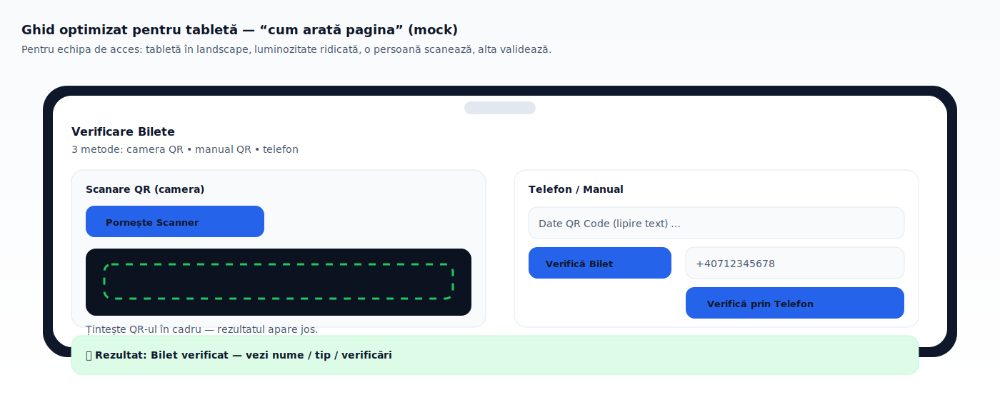
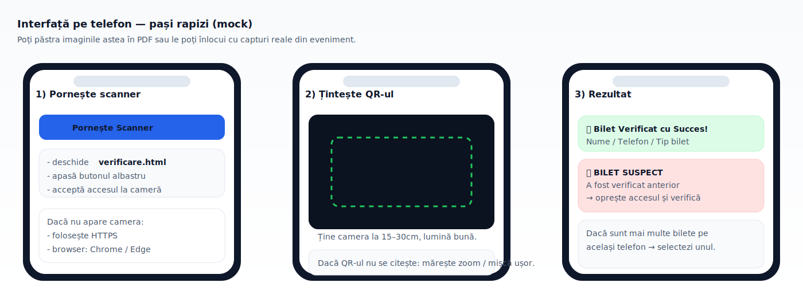
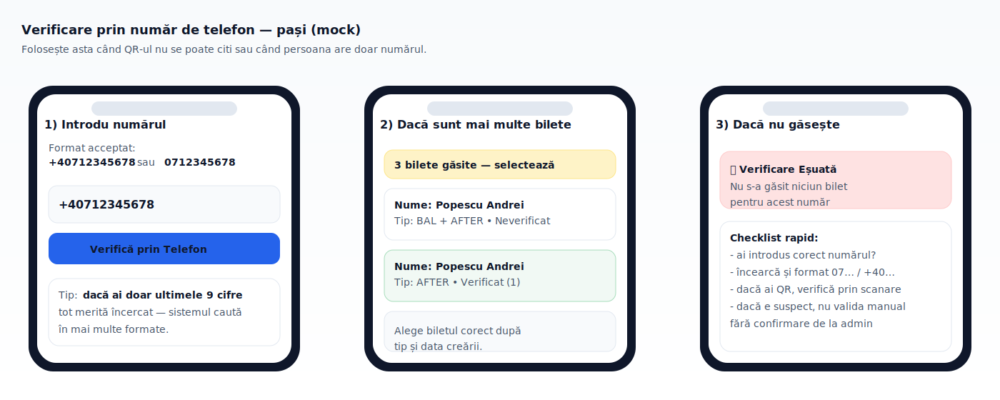
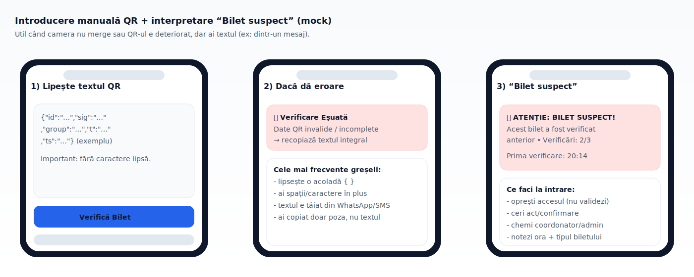

Ghid: verificare bilete în verificare.html
0) Setup recomandat pentru acces
- Tabletă în landscape: ecran mare, scanare rapidă, vizibilitate bună la soare.
- Telefon: dacă nu există tabletă sau ca dispozitiv de rezervă.
- Browser recomandat: Chrome / Edge.
- Conexiune: HTTPS. Camera nu pornește pe HTTP.
- Regulă de echipă: 1 persoană scanează, 1 persoană validează/controlează.

1) Unde intri pentru verificare
- Deschide pagina:
verificare.html
- Recomandat: Chrome/Edge pe mobil (pentru cameră + scanare QR).
Dacă scanezi cu camera, pagina are nevoie de context securizat: HTTPS sau localhost.
2) Metode de verificare disponibile
A) Scanare QR
- Apasă Pornește Scanner.
- Acordă permisiunea de cameră.
- Îndreaptă camera spre QR-ul de pe bilet.
Dacă nu merge camera: vezi secțiunea “Probleme comune”.
B) Introducere manuală
- În “Date QR Code”, lipești textul QR (exact cum este).
- Apasă Verifică Bilet.
Util când nu ai cameră sau când QR-ul e deteriorat, dar ai textul.
C) Verificare prin telefon
- Introdu un număr în format
+40712345678 sau 0712345678.
- Apasă Verifică prin Telefon.
- Dacă sunt mai multe bilete pe același număr, apare o fereastră de selecție — alegi biletul corect.
2.1) Interfață pe telefon
Mai jos ai pașii vizual, ca să instruiești rapid echipa de acces.

Cum faci screenshot
- Android: Power + Volume Down (1 sec).
- iPhone: Side + Volume Up (sau Home + Side, depinde de model).
Recomandări pentru scanare
- Lumină bună, fără reflexii pe ecran.
- Ține QR-ul la ~15–30 cm și mișcă ușor până îl prinde.
- Dacă nu pornește camera: asigură-te că ești pe HTTPS și ai permis accesul la cameră.
2.2) Pași detaliați — Telefon & Manual QR
Verificare prin telefon (când QR-ul nu se citește)
- Introdu numărul (recomandat
+40… sau 07…).
- Apasă Verifică prin Telefon.
- Dacă apar mai multe bilete, selectează după tip și data creării.

Introducere manuală QR
- În “Date QR Code”, lipești textul complet (fără să lipsească paranteze/caractere).
- Apasă Verifică Bilet.
- Dacă primești “Date QR invalide”, recopiază integral textul (de obicei e “tăiat” din mesaj).

Dacă ai “BILET SUSPECT”, nu valida “din mers” — urmează pașii din secțiunea anti-fraudă.
3) Cum interpretezi rezultatul
După verificare, apare un rezultat în pagina de verificare:
- ✅ SUCCES “Bilet Verificat cu Succes!” — bilet găsit și marcat ca verificat.
- ⚠️ AVERTIZARE “BILET SUSPECT” — biletul a mai fost verificat anterior (posibilă reutilizare).
- ❌ EȘEC “Verificare Eșuată” — bilet inexistent / date greșite / răspuns invalid.
4) Reguli anti-fraudă (important)
Sistemul ține un contor verification_count și poate marca biletul ca flagged.
- Pentru
BAL + AFTER și BAL + AFTER VIP: se permite 2 verificări “OK”; devine suspect la a 3‑a.
- Pentru toate celelalte tipuri: se permite 1 verificare “OK”; devine suspect la a 2‑a.
Dacă apare “BILET SUSPECT”, oprește accesul și verifică manual identitatea / istoricul (este semnal de posibilă duplicare/reutilizare).
5) Probleme comune (și soluții rapide)
Camera nu pornește
- Asigură-te că ești pe HTTPS (nu HTTP).
- Verifică permisiunile camerei în browser (Site settings).
- Închide alte aplicații care folosesc camera (WhatsApp Desktop, Zoom etc.).
Nu găsește biletul
- Încearcă metoda “Telefon” dacă QR-ul e deteriorat.
- Asigură-te că textul introdus manual e copiat integral (fără caractere lipsă).
6) Note tehnice (pentru admin / suport)
- Verificare prin QR:
POST /api/verify-ticket cu body {"qrData": "..."}
- Verificare prin telefon:
POST /api/verify-ticket-by-phone cu body {"phoneNumber": "..."}
- Selecție când sunt mai multe bilete:
POST /api/verify-ticket-by-id/:id
La telefon, backend-ul caută în mai multe formate (+40 / 07 / ultimele 9 cifre) și poate întoarce o listă de bilete pentru selecție.